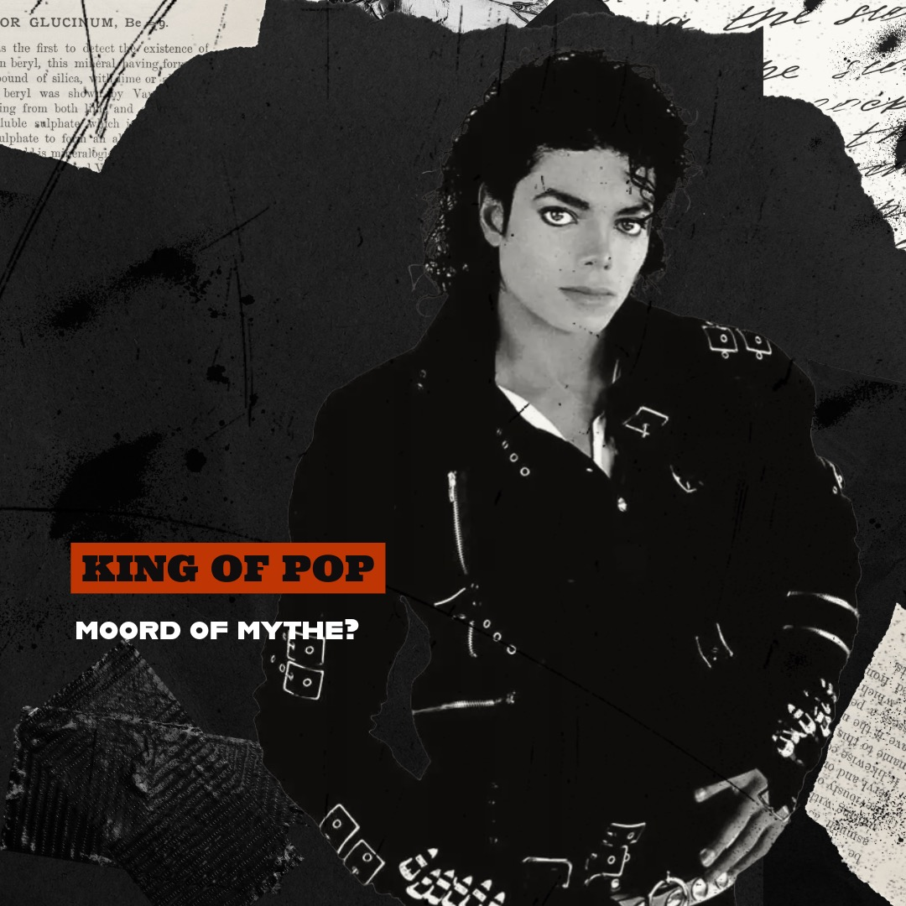

THE KING OF POP HOMICIDE: Het verhaal van Michael Jackson
Billie Jean, Smooth Criminal, They Don't Care About Us en Thriller - de liedjes die iedereen kent en uitgebracht zijn door de enige echte King of Pop, Michael Jackson. Maar wie was hij? Wat speelde zich af in Neverland? En hoe werd zijn “onschuldige” overlijden bestempeld als moord?
LUISTER NU